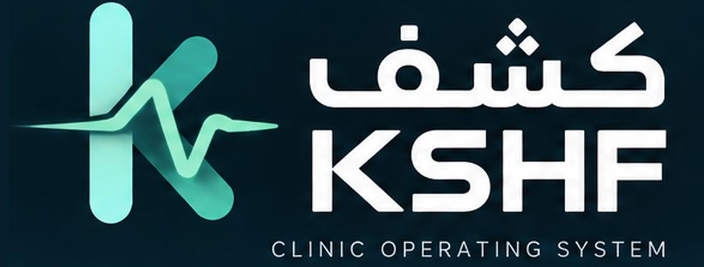
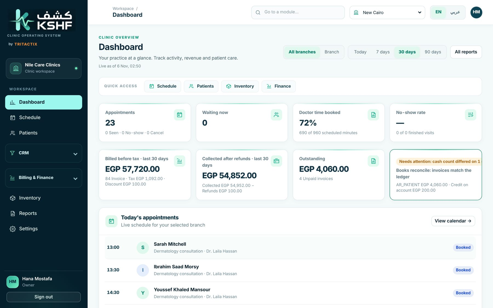
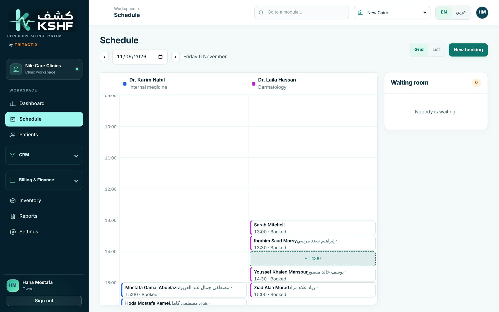
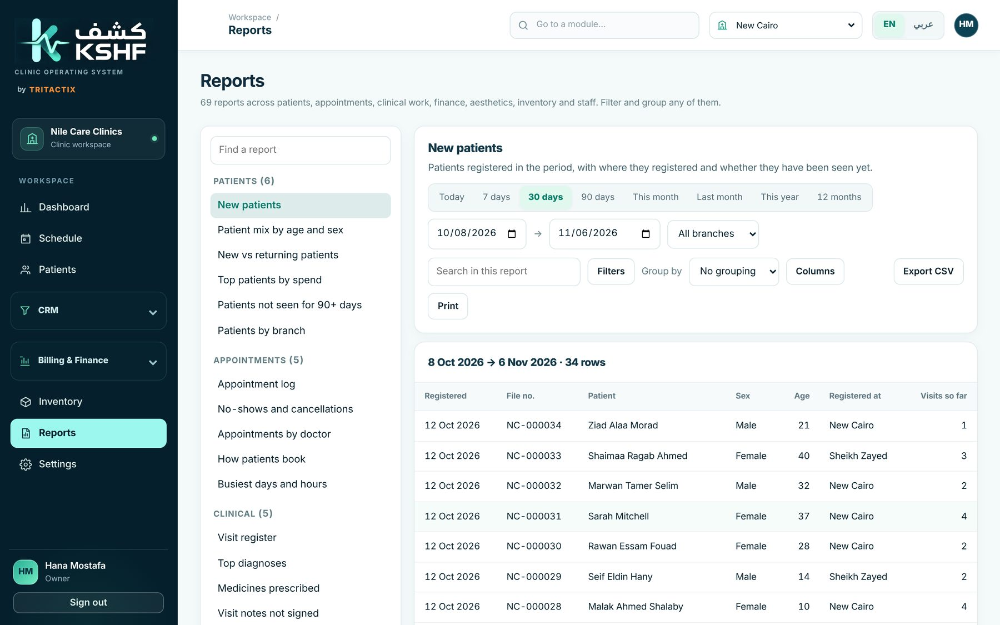
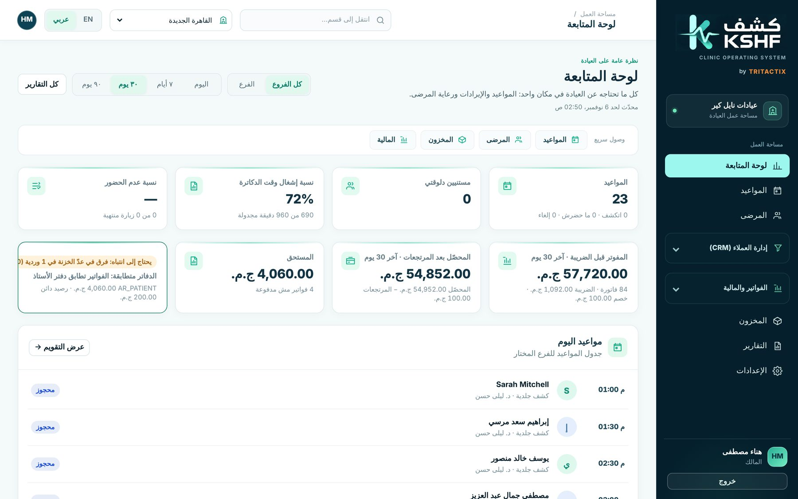

Bookings and queue
Doctor calendars, booking with no double-booked slots, check-in and a live waiting room.

by Tritactix
Clinic operating system
From the booking to the doctor’s visit, the invoice and the monthly report. In Arabic and English, for single clinics and multi-branch groups.

The operating problem
Bookings in one app, files in another, payments in a notebook and stock in a spreadsheet. KSHF puts the whole patient journey in one place.
Each person sees what their job needs: reception, nurses, doctors, cashier, finance and the owner.
Doctor calendars, booking with no double-booked slots, check-in and a live waiting room.
One file per patient, searchable by name, phone or file number in Arabic or English.
Vitals, visit notes, ICD-10 diagnoses and prescriptions with allergy checks, signed by the doctor.
Visits turn into invoices automatically, with tax, split payments, receipts and shift close-out.
Refunds approved by a second person, outstanding balances and a books-to-cash reconciliation.
Stock by branch, lots and expiry dates, and purchase approvals routed by role.
Treatment plans and surgery cases for aesthetic and plastic surgery clinics.
Reports across patients, appointments, doctors, finance and inventory, with filters, grouping and export.
Multi-branch groups, role-based access and a full audit trail of who did what.



The patient moves through the clinic and every step lands in the same record.
Reception books the right doctor and slot, with a reminder before the visit.
The patient arrives and joins the queue with a ticket.
Vitals, notes, diagnosis and prescription in one visit record.
The invoice is ready at the cashier, with a bilingual receipt.
The owner sees visits, revenue and stock without asking anyone.
Set up for each clinic
Each clinic gets its own workspace, set up in a short guided setup, with its data kept separate from every other clinic.
Book a 30-minute demo with the Tritactix team, in Arabic or English.